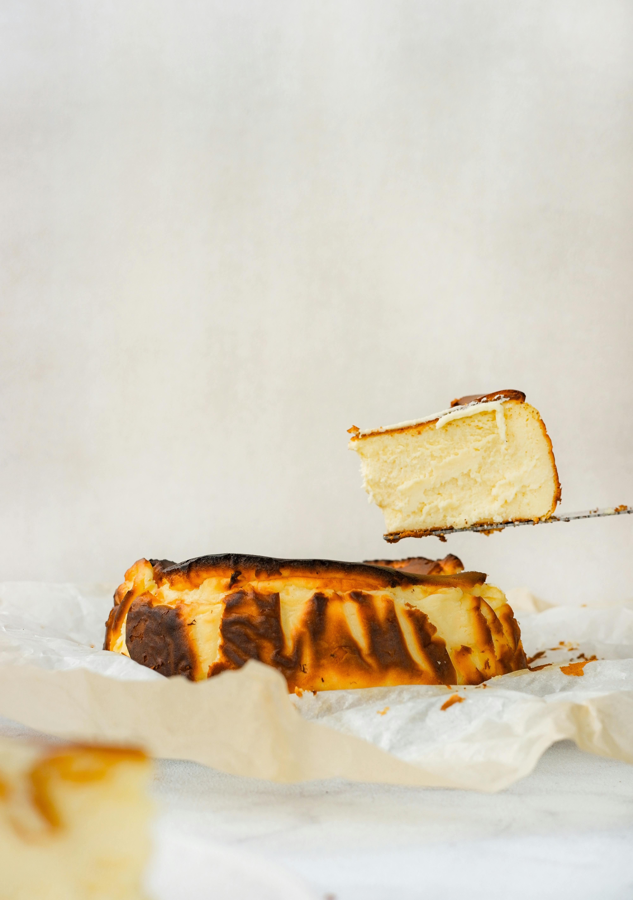

Home Page
Burnt Cheese Cake

Description
This is the cake to make if you want that premium Basque
feel with little effort. It only takes 15 minutes to prepare and
35 minutes to cook.
Ingredients
- 300g Mascarpone cheese, at room temp
- 500g Philadephia type of cheese (can be the cheaper kind), at room temp
- 130g granulated sugar
- 5 eggs, at room temp
- 320g heavy whipping cream 30% fat, at room temperature
- 26g cornstarch or flour
- 1 spoonful of vanilla sugar or more
Steps
- Add your Philadephia and Mascarpone cheese into a bowl, and mix for about 2 minutes
- Preheat the oven to 220C
- Slowly add the sugar and flour while mixing
- Add eggs one by one while mixing
- Pour in the flour while mixing
- Pour in the vanilla sugar while mixing
- It's ready to bake. Pour the good stuff into a mold and bake for about 35 minutes, checking after 25 minutes